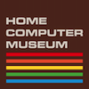
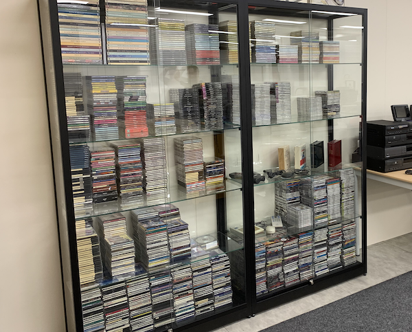
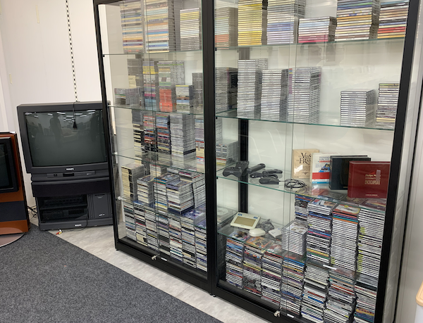

|
ICDIA CD-i Software Archive Contents
Visit the Full Archive of 1,500+ discs in the Home Computer Museum The New International CD-i Association maintains the world's largest archive of CD-i software titles. It contains around 500 consumer titles (available through regular retail channels), around 400 professional titles (created for one particular client company and not publicly for sale), as well as around 700 titles on CD-i related disc formats (like Photo-CD and Video-CD). The archive was built from 1990 onwards by Jorg Kennis. It was and is regularly used for research, documentation and demonstration purposes. Since 2020, the entire collection is available to the general public at the Home Computer Museum in the city of Helmond, the Netherlands. The museum staff is able to demonstrate specific titles on request. The CD-i collection is accessible as part of the normal entrance fee. For more information about location, admission fees, opening hours, and to get a glimpse of the hundreds of other devices in the museum, please refer to the Home Computer Museum website.   |
|
|
{kind=link}
{kind=link}